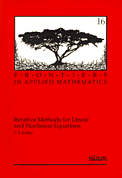
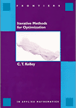
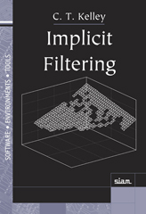

  
C. T. Kelley,
Implicit Filtering
no. 23 in Software Environments and Tools,
SIAM, Philadelphia, 2011.
C. T. Kelley,
Solving Nonlinear Equations with Newton's Method
number 1 in Fundamental Algorithms for
Numerical Calculations, SIAM, Philadelphia, 2003.
C. T. Kelley,
Iterative Methods for Optimization ,
number 18 in Frontiers in Applied Mathematics, SIAM, Philadelphia, 1999.
C. T. Kelley,
Iterative Methods for Linear and Nonlinear
Equations,
number 16 in Frontiers in Applied Mathematics, SIAM, Philadelphia, 1995.
C. T. Kelley,
Solving Nonlinear Equations with Iterative Methods:
Solvers and Examples in Julia
no. 20 in Fundamentals of Algorithms,
SIAM, Philadelphia, 2022.